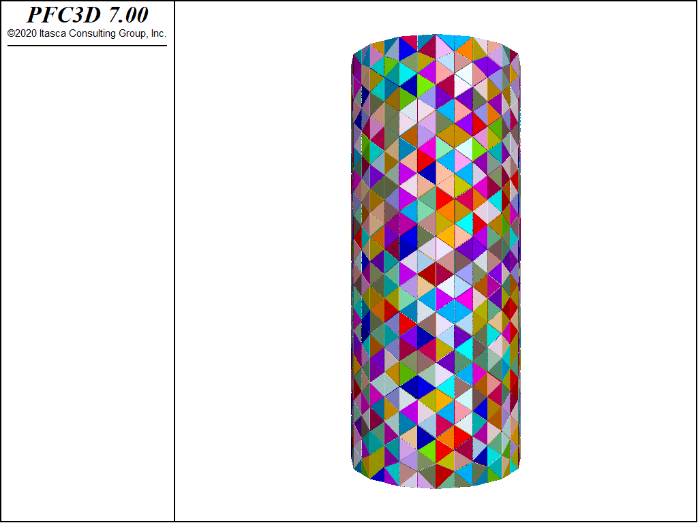
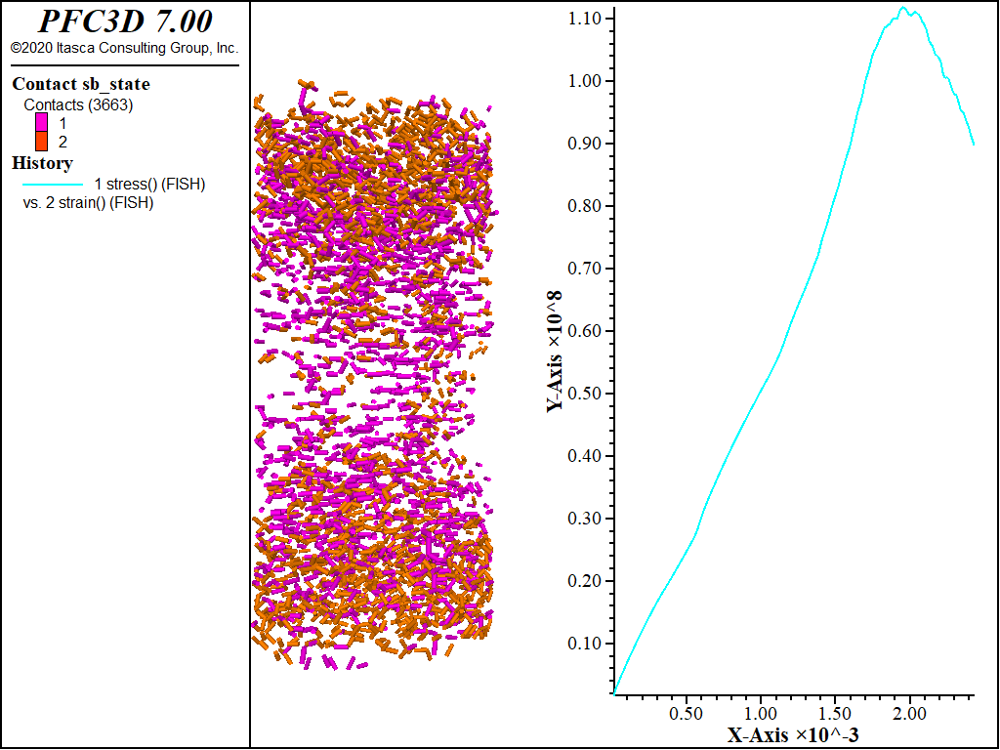
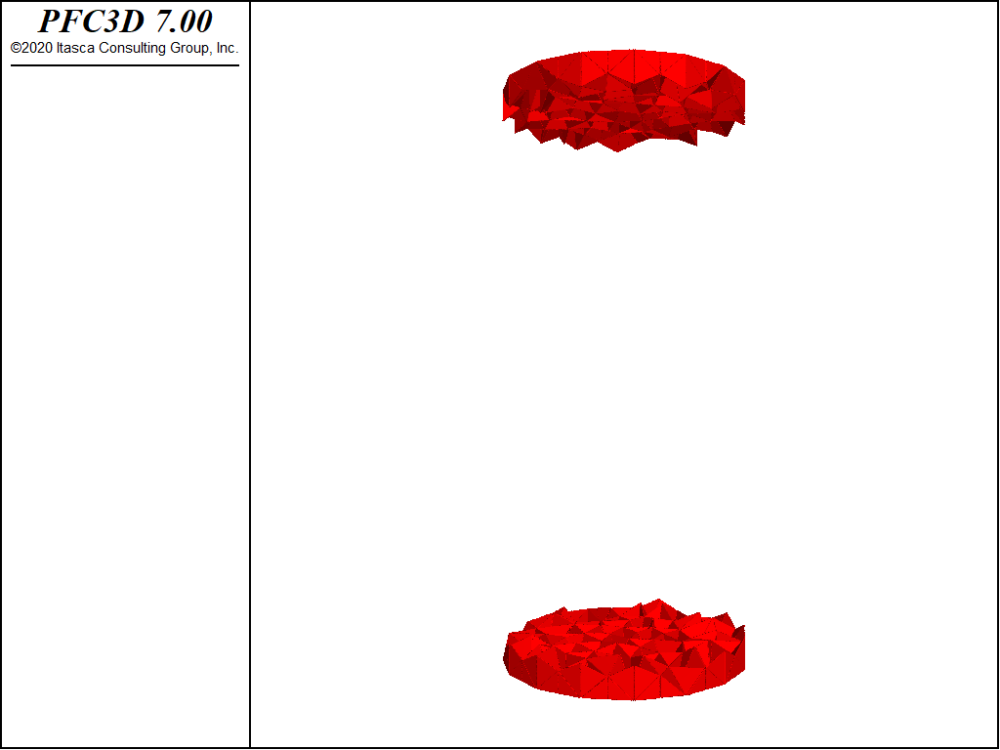
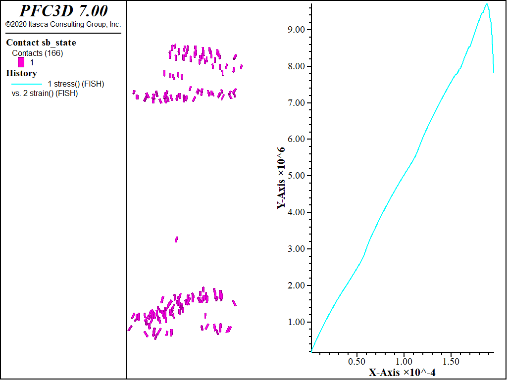
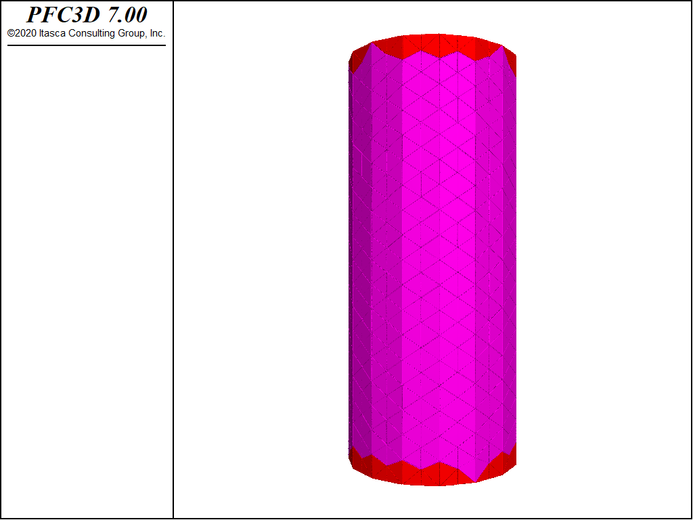

简单刚性块体黏结块体建模（BBM）
| 算例资源 | |
|---|---|
| 数据文件（Data Files） | 项目： 打开“SimpleBBM.prj”[1]（在 PFC 中） |
问题描述
本算例展示了如何有效地利用刚性块体进行简单的黏结块体建模（BBM）。所创建的试样如下所示。该试样使用 rblock construct 命令创建。此命令接收一个几何集合并对其进行网格划分，从而生成零孔隙率的刚性块体堆积。随后对刚性块体进行缩放，使其初始时相互重叠。这对于 BBM 建模很重要，因为当刚性块体黏结时，计算得到的接触位置只会增量更新。换言之，接触位置不会
随重叠区域的变化而更新。取而代之的是，可以将接触位置视为一个胶结单元的位置，
该胶结单元固定于刚性块体表面，直至发生破坏。
为了大幅提高计算性能，使用 rblock erode 命令对刚性块体进行圆化。此命令缩小核心形状并引入圆化。对于具有零孔隙率初始堆积的刚性块体建模，这一操作非常重要，因为侵蚀会移除大量顶点-顶点接触和棱-棱接触，也就是说这些接触将处于非活动状态。实际上，在该模型约 7700 个刚性块体中，刚性块体之间有约 13,000 个面-面接触，而顶点-顶点接触和棱-棱接触则超过 225,000 个。这些接触对试验结果的贡献可忽略不计，但会大幅增加计算时间。在该模型中，此类接触通过 contact inhibit 命令被抑制，这意味着它们被排除在所有计算之外。如果关注的是这些接触可能变得重要的大应变情形，可以很容易地将一个 FISH 函数挂接到 bond_break 事件上，并在接触每一侧的刚性块体周围激活全部或部分接触。
用户必须注意，这种要求重叠才能黏结的做法会导致如下情况：如果使用基于 线性（Linear） 接触模型的接触模型，则必须将属性 lin_mode 设置为 1，以便法向力按增量累积。否则，初始重叠将产生初始接触力，可能导致不稳定。


图 1：初始试样。
模拟结果
对试样进行 UCS 试验和直接拉伸试验。通过指定整个试样（而不仅是压板）的初始速度，可以减小应力-应变响应中的各种虚假振荡。使用 FISH 函数计算应力、应变和杨氏模量，并记录这些量的历史。目标材料是一种非常脆性的硬岩，其杨氏模量为 50 GPa，UCS 强度约为 110 MPa，抗拉强度约为 10 MPa。本次模拟使用 软黏结（Soft-Bond） 接触模型，且不进行任何软化。在不考虑软化的情况下，该模型的响应与 线性平行黏结（Linear Parallel Bond） 模型相似，但有以下几个显著区别：1）剪切破坏时，剪切力不会降至 0，而是降至摩擦滑动极限；2）在三维中具有扭转抗力，这对未黏结的刚性块体很重要；3）只需要一个法向刚度和一个剪切刚度，而不需要分别设置平行黏结刚度与线性刚度。
以下各图展示了 UCS 试验结果，该试验运行至残余强度为峰值的 80%。所期望的峰值达到了，且计算得到的破碎块体表明试样发生了完全破坏，同时包含拉伸破坏和剪切破坏。


图 2：黏结断裂后的 UCS 结果。


图 3：UCS 试验计算得到的破碎块体。
以下各图给出了直接拉伸试验的结果，该试验运行至残余强度为峰值的 80%。在用作压板的刚性块体边缘附近出现两个明显的破坏面。所期望的抗拉强度达到了。


图 4：黏结断裂后的直接拉伸结果。


图 5：直接拉伸试验计算得到的破碎块体。
尾注
| [1] | 这些文件位于 PFC 的算例对话框（菜单中的）下的“examples/simplebbm”文件夹中。如果未出现此条目，请将应用程序数据复制到新目录。（使用菜单命令。详细信息见“复制应用程序数据（Copy Application Data）”一节。） |
| 这些内容对您有帮助吗？… | FLAC3D © 2019, Itasca | 原文更新于 2020 年 10 月 8 日 |